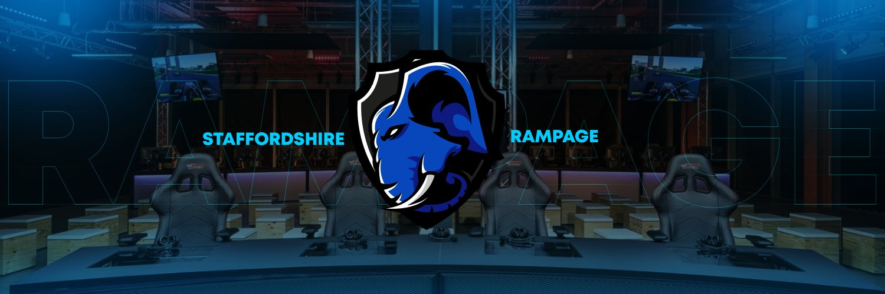

Staffs Rampaging
As the Social Media Manager and Designer for Staffordshire London’s esports team, Rampaging, I was responsible for developing and delivering the team's digital content strategy while working within a defined set of brand guidelines. My role included creating visually consistent graphics, managing social media communications, and ensuring cohesive brand representation across all platforms. I collaborated with players, staff, and university organizers to promote events, highlight achievements, and engage the community. Using tools like Adobe Photoshop, I produced content that was both on-brand and visually impactful, helping to strengthen the team’s online identity and grow its presence within the university and wider esports scene.
This concept was created using a combination of Adobe Photoshop and Lightroom to explore dynamic branding within the esports space. Photoshop was used to design and arrange key elements, such as the Red Bull can, custom banners, and event branding, while incorporating lighting, shadows, and layered effects to build depth and cohesion. Lightroom was then used in the post-processing stage to enhance the overall tone and atmosphere—balancing contrast, color, and clarity to create a bold, high-energy visual that aligns with both the Red Bull and League of Legends Worlds aesthetics.
